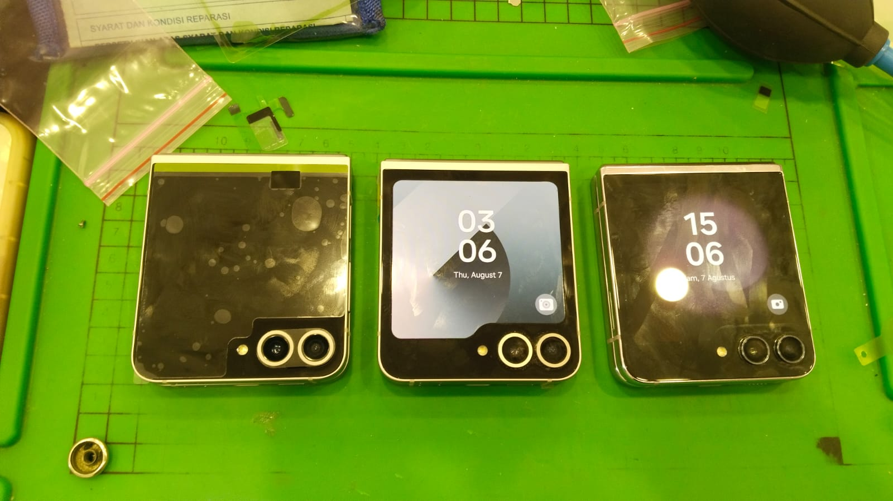
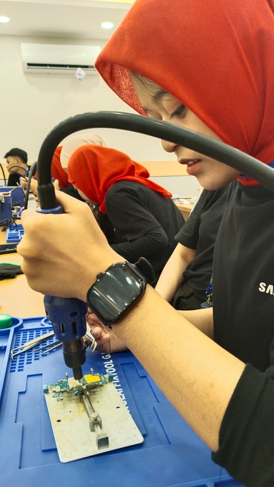

Nov 2026
Peserta Study Group
Mobile Communication Laboratory (ZTE Lab)
Mempraktikkan SIM card programming dan provisioning untuk akses jaringan seluler, berbekal pemahaman alur kerja RAN dan UE.
Hello, I'm
Mahasiswa Teknik Telekomunikasi Telkom University yang berfokus pada IoT, data analytics, dan AI. Sebelumnya teknisi perbaikan Samsung dan magang di PT Gansa Techno, kini membangun proyek end-to-end dari sensor sampai dashboard.
Sedikit tentang saya dan apa yang saya kerjakan.
Saya Nisa Fitriani Novianti, mahasiswa S1 Teknik Telekomunikasi Telkom University yang berfokus pada IoT, data analytics, dan AI. Saya sudah membangun 4 proyek end-to-end, meraih Best Deck & Solution di Consulting Bootcamp 180 Degrees Consulting, dan mendapat skor 96,2 pada final project IBM SkillsBuild x Hacktiv8. Sebelum kuliah saya bekerja lebih dari satu tahun sebagai teknisi.
Telkom University, Bandung. S1 Teknik Telekomunikasi, Sep 2026 - Sekarang.
SMK Negeri 1 Cimahi, Cimahi. Teknik Elektronika dan Komunikasi, Jun 2021 - Jun 2024.
Dari memperbaiki perangkat Samsung sampai mendalami Teknik Telekomunikasi, saya ingin terus berkembang di pertemuan antara jaringan, perangkat, dan kecerdasan buatan, dan menjadi profesional teknologi yang adaptif.
Pengalaman teknis, dari perbaikan perangkat sampai jaringan seluler.
Nov 2026
Mobile Communication Laboratory (ZTE Lab)
Mempraktikkan SIM card programming dan provisioning untuk akses jaringan seluler, berbekal pemahaman alur kerja RAN dan UE.
Okt 2024 - Okt 2025
PT Graha Service Indonesia
Mendiagnosis dan memperbaiki rata-rata 450 unit handheld product Samsung per bulan, melakukan pengujian fungsi, menyusun laporan teknis, dan menjelaskan hasil perbaikan kepada pelanggan.
Jan 2024 - Mei 2024
PT Gansa Techno
Memperbaiki rata-rata 60 unit alat Yarn Clearer per hari melalui inspeksi visual, pengecekan komponen elektronik, dan uji fungsi bersama tim teknis hingga alat berfungsi optimal.
Kegiatan di luar kelas, bersama AIESEC.
Sep 2026 - Sekarang
Mengikuti pelatihan kepemimpinan AIESEC Future Leader dan menginisiasi program volunteer bersama tim.
Nov 2026
Proyek akhir AIESEC Future Leader. Menginisiasi program Global Classroom, mengajar total 4 kelas SD, dan mengembangkan pembelajaran interaktif Bahasa Inggris dan SDGs.
Empat proyek yang saya bangun dari awal sampai bisa dipakai.
Proyek IoT
Sistem pemberi makan kucing otomatis berbasis ESP32 yang dikontrol jarak jauh lewat MQTT dan dashboard web. Pemberian pakan berjalan sesuai jadwal pada pengujian simulasi Wokwi.
Personal Project
Dashboard interaktif yang mengubah hingga 10.000 baris umpan balik pelanggan (CSV) menjadi insight sentimen dan pola keluhan secara cepat.
Lihat detail
Personal Project
AI Agent yang mengubah dokumen tidak terstruktur (Word dan PDF) menjadi data terstruktur yang bisa dicari dan dianalisis. Sudah diuji pada 10+ dokumen.
Lihat detail
SIC Batch 4
Prototipe meja otomatis berbasis Python dan Java yang naik-turun ke ketinggian pilihan pengguna lewat layar LCD. Mencakup posisi duduk (±58-72 cm) dan berdiri (±95-120 cm).
Keterampilan dan bukti belajar yang bisa diperiksa.
Data Analysis, CSV Processing, Sentiment Analysis, Data Visualization, LLM & Prompt Engineering, Generative AI, RAG, Embedding & Semantic Search.
ESP32, MQTT, Wokwi, PlatformIO, RAN, UE, SIM Card Programming.
Python, SQL, C++, HTML, CSS.
Soldering dan multimeter untuk prototyping dan troubleshooting hardware (mahir). GitHub dan IBM Bob untuk pengelolaan kode dan pengembangan.
Best Deck & Solution (anggota tim), Consulting Bootcamp, 180 Degrees Consulting Universitas Brawijaya, 2026.
Ada proyek atau peluang yang ingin dibicarakan? Hubungi saya.
Bandung, Indonesia




Sebagai teknisi ponsel Samsung, saya bertanggung jawab atas perbaikan hardware dan software perangkat Samsung. Pekerjaan meliputi diagnosis kerusakan komponen, penggantian spare part, software flashing, serta troubleshooting berbagai permasalahan perangkat secara sistematis dan efisien.


Bekerja di PT Gansa Techno sebagai teknisi sistem Quantum. Bertanggung jawab melakukan troubleshooting sistem secara sistematis, mengidentifikasi permasalahan teknis, serta memberikan solusi perbaikan yang efektif dan efisien untuk menjaga keandalan sistem operasional.